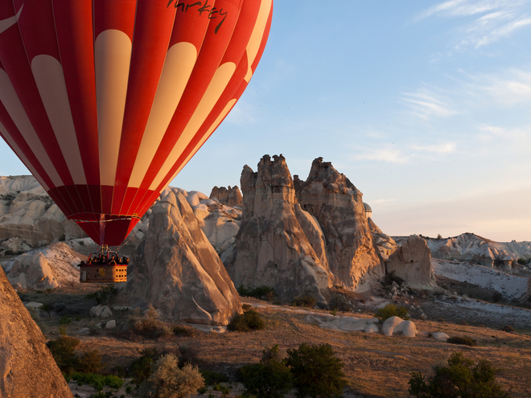
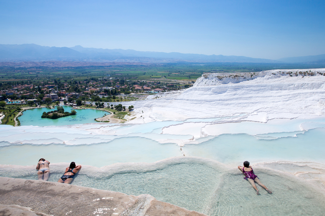
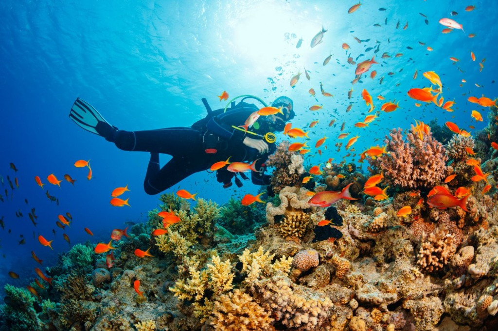
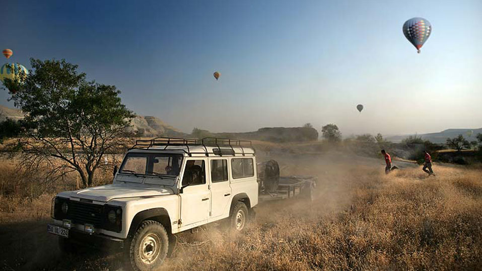
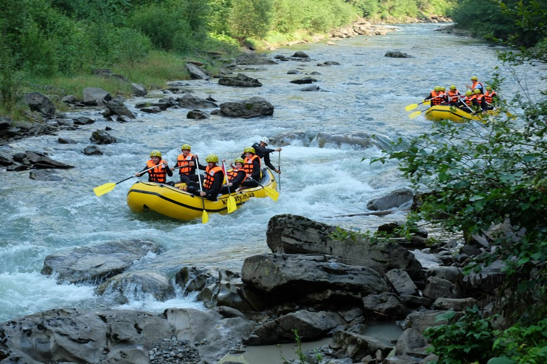
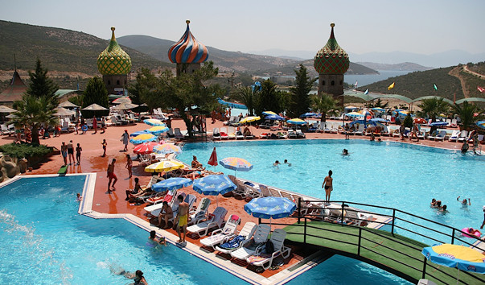
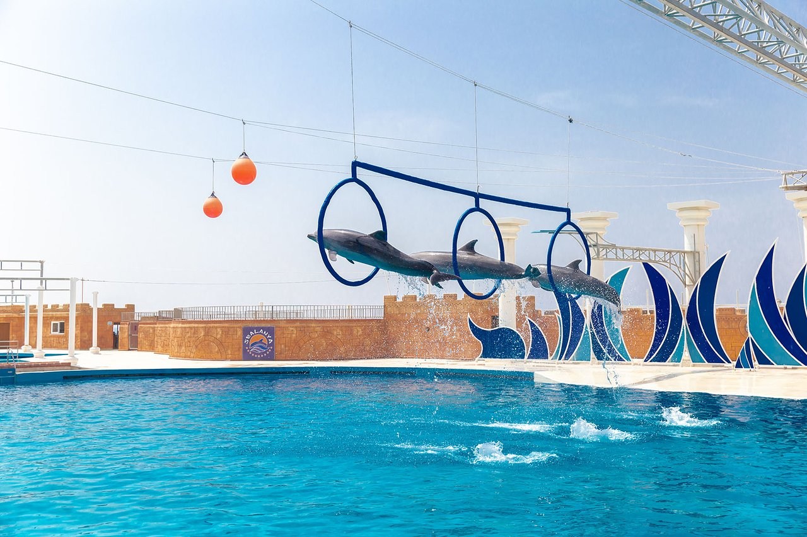

|
Розваги в Турції |
Головна |
До Турції |
Про країну |
Розваги |
Культура |
|  | Каппадокія - область неземних ландшафтівЦього ти не забудеш ніколи! З висоти пташиного лету побачити Каппадокію - чарівну країну скелястих утворень, створених в результаті виверження стародавніх вулканів - багато чого варте. Боятися нічого, адже Каппадокія вважається одним з кращих місць в світі для польотів на повітряній кулі. |
|  | З'їздити на екскурсію в ПамуккалеПобувати в "Бавовняному замку" (як перекладається з турецької "Памуккале") зобов'язаний кожен турист. Це справді восьме чудо світу! Не дарма цей унікальний комплекс мінеральних джерел внесено до Списку Всесвітньої спадщини ЮНЕСКО. |
|  | ДайвінгЛюбителям цього захоплюючого виду спорту і тим, хто ніколи не плавав з аквалангом, принесе величезне задоволення прогулянка красивим морським дном в оточенні різнобарвних рибок. Приєднатися до дайвінг-туру можна практично в будь-якому курортному місті Туреччини — достатньо звернутися до гіда, в готель або будь-яку турфірму. Пройшовши необхідний тренінг, можна отримати сертифікат аквалангіста. |
|  | Джип-СафаріЗахоплююча дух пригода, що поєднуються з незвичайними красотами природи. На маневрених і швидкохідних джипах можна здійснити подорож в гори, подолавши протягом шляху безліч перешкод, таких як круті підйоми і спуски, крижані гірські річки. Забратися вище — аж до позначки 1200-1800 метрів, можна насолодитися прекрасним видом, що відкривається з вершин гір. Проїжджаючи по країні, можна також побачити життя турецької глибинки, музеї під відкритим небом, церкви і мечеті, пам'ятники культури і мистецтва. Подібні тури завжди проходять в супроводі гідів-провідників. |
|  | РафтингПодорож у надувних човнах, 2-місних каное або 10-місцевих плотах по кристально-чистим гірським річкам Південного узбережжя Туреччини. Для того щоб випробувати себе і отримати незабутні відчуття, не потрібно мати ніякого досвіду. Професійні гіди докладно розповідають про маршрут, використання інвентарю, про техніку безпеки та загальні правила, видають рятувальний жилет, пояснюють всі деталі його експлуатації і вчать керувати рафтом. Після цього навіть найменші гості (починаючи з 4 років) можуть безстрашно взяти участь в підкоренні водної стихії разом з батьками. Сплав триває 5 годин. |
|  | Аквапарк Adaland«Adaland» – найбільший у Туреччині комплекс водних розваг та один із найкращих аквапарків світу, згідно з рейтингом, опублікованим у 2005 році виданням New York Post. Парк займає величезну територію та складається із зони з водними атракціонами, дельфінарію та «Морського парку». Це чудове місце, де кожному відвідувачу від малого до великого знайдеться розвага до душі. Аквапарк «Adaland» оснащений 24 гірками різного рівня складності, безліччю басейнів, водоспадів та джакузі та трасою для рафтингу. |
|  | Sealanya DolphinparkПодання тут відбуваються кілька разів на день, але охочих подивитися шоу дуже багато. Це й не дивно: артисти викладаються на всі сто відсотків. Дельфіни, морські котики та морські леви із задоволенням показують трюки, танцюють та веселять глядачів. Крім арени з дельфінами тут розташований аквапарк з різними гірками, який неодмінно приверне увагу дітей, старших дітей та їхніх батьків. Величезна територія парку красиво і зі смаком оформлена, чиста і доглянута, всюди соковита зелень, все сприяє комфортному відпочинку. |
Головна |
До Турції |
Про країну |
Розваги |
Культура |